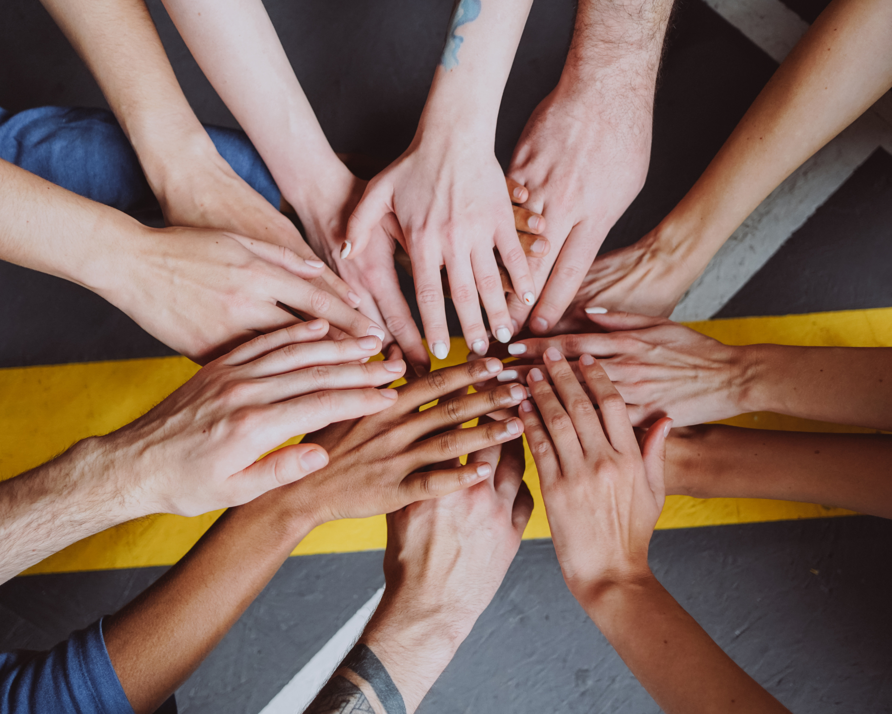

“Quando muitas mãos se unem, o impossível se torna realidade.”

💪 Voluntariado: Juntos, Fazemos a Diferença
Na Vida em Rede, acreditamos que cada pessoa tem algo valioso a oferecer.
O voluntariado é o coração da nossa ONG — é o que dá vida aos nossos projetos, multiplica o impacto e
constrói uma
corrente de solidariedade que transforma realidades.
🌎
Ser voluntário é muito mais do que doar tempo: é doar conhecimento, empatia e energia para causas que
importam.
Aqui, cada voluntário é parte fundamental da mudança que queremos ver no mundo.
✨ O que você pode fazer como voluntário
Ensinar: participe das nossas aulas de reforço escolar e oficinas de inclusão digital.
Ajudar: organize campanhas de arrecadação de alimentos, roupas e brinquedos.
Cuidar: apoie as ações de saúde e bem-estar comunitário.
Criar: participe de projetos culturais e artísticos para crianças e adolescentes.
Preservar: colabore nas atividades de reciclagem, hortas urbanas e mutirões ambientais.
💚 Ser voluntário é descobrir que, ao ajudar o outro, você também se transforma.
🌍 Nossos Projetos Sociais
A Vida em Rede mantém diversos projetos ativos durante o ano, voltados à educação, sustentabilidade, saúde e
cidadania.
Conheça alguns deles:
📘 Reforçar para Transformar
Oferece aulas de reforço escolar e alfabetização de jovens e adultos, com foco na recuperação da
autoestima e no incentivo à educação continuada.
Implantação de hortas urbanas em terrenos ociosos e escolas públicas, promovendo alimentação
saudável e conscientização ambiental.
📍7 hortas ativas | 👨🌾 +40 famílias envolvidas.
💼 Mãos que Criam
Capacita mulheres e jovens em situação de vulnerabilidade para o artesanato e o empreendedorismo
sustentável.
📍Oficinas semanais | 💡 Criação de produtos com material reciclável.
🎭 Cultura em Movimento
Projeto cultural que oferece oficinas de teatro, dança e música para crianças e adolescentes da
comunidade.
📍Atuação em 2 centros culturais | 🎶 +100 participantes ativos.
❤️ Ação Solidária
Campanhas contínuas de arrecadação de alimentos, roupas e brinquedos, além de ações emergenciais
em comunidades carentes.
📦 +5 toneladas de alimentos doadas em 2024.
🤲 Como Doar
Suas doações tornam tudo isso possível!
Cada contribuição, seja grande ou pequena, ajuda a transformar vidas e fortalecer nossos programas.
💵 Doação Financeira
Você pode apoiar com doações únicas ou mensais:
Banco Solidário – Ag. 1234 – C/C 56789-0 – ONG Vida em Rede
🎁 Doação de Itens
Aceitamos:
Alimentos não perecíveis.
Roupas, cobertores e calçados.
Materiais escolares e brinquedos.
Computadores e eletrônicos usados (em bom estado).
📍Entrega: Rua das Flores, 128 – Bairro Santa Tereza – BH
🕓 Segunda a sexta, das 9h às 17h
🕊️ Apadrinhamento Social
Adote simbolicamente um dos nossos projetos e acompanhe de perto o impacto da sua contribuição.
Ideal para empresas, grupos de amigos ou famílias que desejam fazer a diferença de forma contínua.
🌟 Junte-se a Nós
A Vida em Rede é feita por pessoas como você, que acreditam que cuidar do outro é o primeiro passo para
transformar o mundo.